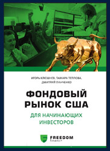

Меню
Меню Брокеры
Брокеры Стратегии
СтратегииТрейдинг для начинающих с нуля: обучающие книги по основам
В какой литературе можно прочесть, для чего нужны японские свечи, как использовать stop-loss или зачем необходимы стаканы на графиках? Предлагаем перечень книг об онлайн трейдинге для начинающих инвесторов, где доступным языком описываются особенности финансовой торговли.
-
 Binomo
Binomo -
 Olymp Trade
Olymp Trade -
 ProfitPlay
ProfitPlay
Рекомендации по трейдингу от профессиональных финансистов
Много полезных материалов для новичков по онлайн трейдингу с нуля можно найти на портале Минфина. Знакомиться с нюансами торговли на фондовых площадках необходимо начинать с изучения теории и знакомясь с базовыми понятиями и профессиональной терминологией.
В отличном пособии «Малой энциклопедии трейдера», написанной Э. Найманом, можно узнать не только о базах технического анализа. Здесь рассказывается, когда лучше приобретать или продавать различные инструменты. Она позволяет разобраться в аспектах торговли на фондовых рынках даже самым зеленым новичкам.
Опытные трейдеры советуют познакомиться с «Секретами биржевой торговли», В.Твардовского и С.Паршикова. Данное пособие станет полезным материалом для трейдеров-новичков, позволяя познакомиться с особенностями функционирования финансовых рынков, а также о разных методах теханализа. Обязательно почитайте, если интересуетесь онлайн трейдингом для начинающих.
Читая пособие «Торговля акциями», составленное Д. Ливермором, можно увидеть не только массу полезной информации и цифровых данных. В книге описываются и некоторые аспекты философии трейдинга.
Для успешной работы на финансовых рынках, нужны не только фундаментальные теоретические знания, но и понимание аспектов психологии. Хорошим образцом такой литературы будет книга Б. Биггса «Вышел хеджер из тумана».
Книгоиздатели предлагают массу книг, в которых можно узнать о торговле на разных видах финансовых и сырьевых бирж с нуля. Однако большинство этой литературы используют профессиональную терминологию, которая непонятна для простых читателей. Ниже представлен список литературы, полезной начинающим инвесторам, в которых изложены детали и работы фондовых площадок, простым и доступным языком.
Список книг по онлайн трейдингу для новичков: обучающие книги по основам торговли
- Изд: «Диалектика», 2016 - Петров К., Лукашевич Т. «Как заработать на бирже для чайников»
Тут подробно раскрываются значения профессиональной терминологии трейдинга, освещающие суть и особенности разных операций. Авторы постарались осветить многие аспекты торговли на финансовых рынках. Полезный материал для будущих клиентов бинарных брокеров, которые работают в сети.
В этой книге для новичков читатели отыщут полезные материалы о деятельности мировых и отечественных бирж, а также множество информации о рабочих инструментах онлайн трейдинга для новичков. Тут подробно рассмотрены нюансы фундаментального и теханализа. Здесь есть обзоры популярных торговых стратегий и рассматриваются нюансы инвестирования в различные виды высокорисковых активов.
- Клюшнев И., Панченко Д., Теплова Т. «Фондовый рынок США для начинающих инвесторов»
Всем, кому интересны долгострочные или краткосрочные капиталовложения в разные виды ценных бумаг, данная книга станет превосходным настольным пособием. Здесь рассказывается:
- как функционирует биржа;
- зачем необходимы услуги брокеров;
- что можно узнать из отчетов компаний;
- как проводятся торговые операции на биржевых площадках;
- о принципах составления персональных финансовых планов.
Тут рассматриваются разные аспекты фундаментального и теханализа. Из представленных материалов можно узнать о принципах формирования инвестиционного портфеля, научатся разбираться в различных графиках, таблицах и аналитических данных. Здесь можно показаны этапы деятельности и примеры успешных сделок известных инвесторов (У. Баффета, Д. Ливермора и др).
- Верников А., Марков В., Шишкина Е., Подлевских Н., Сорокина Ю., Авакян Н. «Фондовый рынок для начинающих»
Книга представляет собой качественный и удобное учебное пособие для новичков-инвесторов. Здесь рассматриваются разнообразные типы финансовых инструментов, и методы их применения в рабочей деятельности трейдеров.
В качестве базы в данное пособие по онлайн трейдингу для новичков вошли материалы курсов Школы биржевого мастерства инвестиционной компании «Ceriсh Capital Management». Книга позволяет обучиться основам трейдинга с «нулевого» уровня. В процессе ее освоения читатели узнают об особенностях фондового рынка. Здесь подробно объясняются сложные профессиональные аспекты торговли на бирже простым языком.
Тут есть детальное описание процедуры открытия счетов и проведения разных типов сделок. В пособии рассказывается о наиболее перспективных торговых стратегиях, а также о разнообразных методиках онлайн трейдинга с нуля.
- Стинбарджер Б. «Самоучитель трейдера. Психология, техника, тактика и стратегия»
Данный бестселлер дважды переиздавался в России, что свидетельствует о высоком качестве изложенных материалов. Книга не претендует на роль учебника дл инвесторов, которые пытаются познать все и сразу с нуля. В ней ставится задача реальной помощи начинающим торговцам на первых порах работы на фондовых рынках.
В ней акцентировано внимание на психологических аспектах торговых операциях. Читатели могут успешно выходить из стрессовых ситуаций при сильных скачках курсов активов. Яркие примеры и истории из реальной жизни трейдеров позволяют по-настоящему оценить сложную деятельность в сфере финансовых операций. Все материалы читаются легко и просто даже новичками.
- Михнов Д. «Успешный трейдинг на фондовом рынке. От нуля до первого миллиона.»
В этом дополненном переизданном учебнике изложены материалы о разных видах финансовых инструментов для новичков по онлайн трейдингу с нуля. Тут рассмотрены вопросы налогов, регулирующих сферу торговли ценными бумагами. Здесь детально описаны способы заключения сделок и этапы выставления заявок, с множеством графиков и полезных иллюстраций. В книге простыми словами объясняется отличие фондового рынка и «Forex», а также иных финансовых площадок и «кухонь». В ней описываются основы теханализа и психологические особенности трейдинга.
Изучая специализированную литературу, познавая различные нюансы онлайн трейдинга с нуля, можно сформировать необходимую базу знаний для совершения прибыльных сделок в сфере трейдинга.